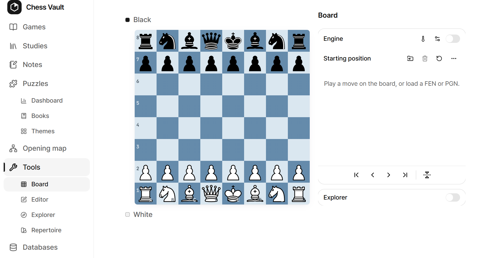
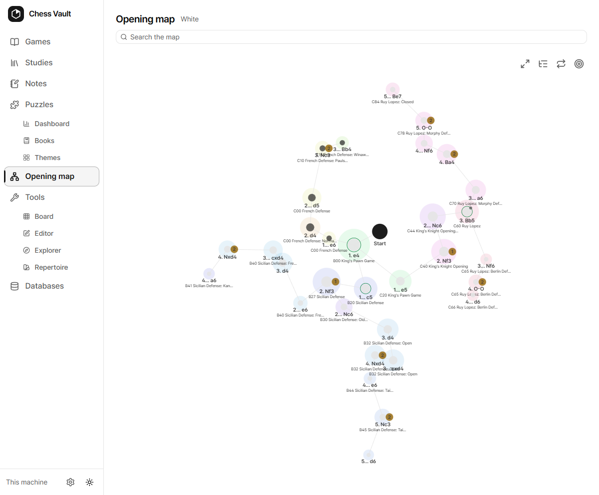
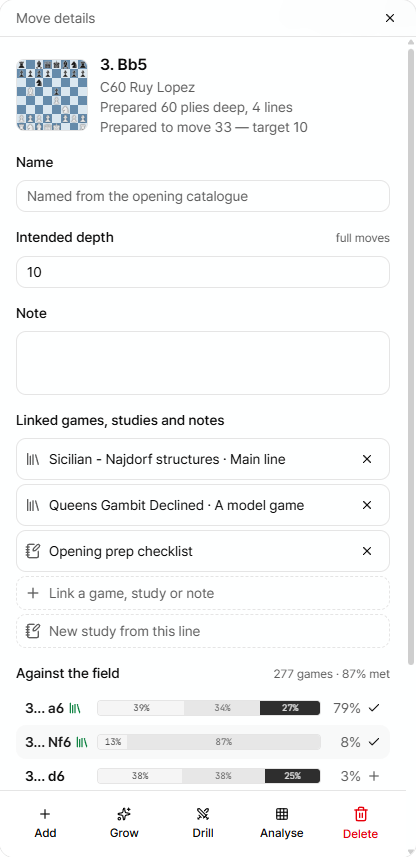
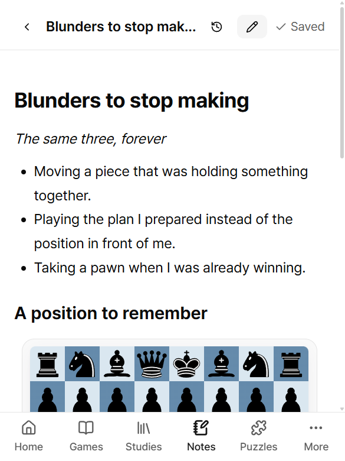
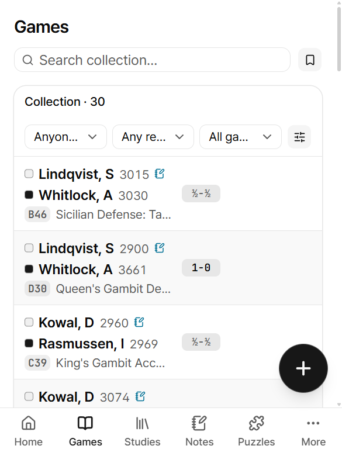

Your chess, in plain files.
A private, self-hosted chess workbench: analysis, an opening explorer, studies, notes, a game collection and puzzle training — all in one folder you own.
The demo needs no install and no account — it runs entirely in your browser.

What it does
Analysis board
Stockfish 18 runs in the browser. Full move trees with variations, comments and arrows, plus a game review that scores accuracy.
Studies and notes
PGN chapter studies, and markdown notes with interactive boards embedded in the text. The files stay readable in Obsidian.
Puzzle training
Train on the Lichess puzzle set with difficulty bands and a progress dashboard — and import scanned tactics books.
Openings
Explore with reference databases built from your own PGNs, and rehearse lines against real statistics in the repertoire trainer.
Your games
Browse your chess.com and Lichess archives month by month, and keep an annotated collection of the ones worth keeping.
Completely offline
By default it runs on this machine — the app and the vault both. The engine, fonts and icons all ship with it and there are no runtime CDN calls, so pulling the network cable changes nothing.

The opening map
Your repertoire as a shape rather than a list: the moves you chose, one map per colour, each dot sized by how often the field plays it and badged where you have no answer yet. Link a study and everything below is derived from it, so what the map claims you have prepared is what you have.

Every move knows what covers it
Select a dot and the opening catalogue names it, while the panel counts how deep your linked studies actually prepare it and how many lines they end in. Notes come along for the reader; only the studies are allowed to say what is prepared.

The files are the format
Studies are PGN, notes are markdown, progress is JSON. No database as the source of truth, no proprietary formats. Backing up is copying a folder — and if this app ever goes away, your chess opens in something else.

Or reach it from anywhere
Keeping the vault on this machine is the default, but one small Linux box can own it instead and everything else becomes a client — a phone's home screen as a PWA, or the same desktop app pointed at it. Same games, same progress, whichever device you opened.
Download
Desktop app
Installers for Windows, macOS and Linux. By default it keeps the vault in a folder on that machine; point it at a server instead if you have one. It updates itself on launch.
Host it yourself
Run it anywhere Node runs. One port serves both the app and its API.
git clone https://github.com/chessvault-app/chessvault.git
cd chessvault
npm install
npm run build
CHESS_VAULT_DIR=/srv/chess-vault npm startPhone
Nothing to install: open your server's address and add it to the home screen for a full app with an offline shell.
Try the demo firstThe macOS build is unsigned, so the first launch needs right-click then Open.